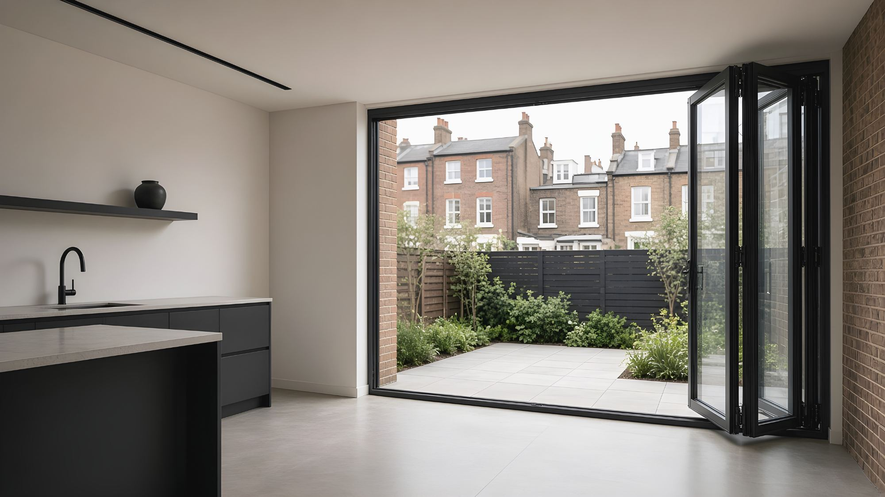

Three leaves, one side
For openings of about 2.4–3.3 m. The end leaf is a traffic door.
Bi-fold doors fold back in leaves and stack to one or both sides, opening up to about 90% of the width. It's the right choice when the garden and the kitchen should feel like one room all summer. We'll help you choose the layout, the traffic door and where the stack goes.
The data on this page is for aluminium. Bi-folds are also available in timber and PVC. Compare materials.

A bi-fold opens far more of the wall than any slider. But the doors are closed for most of a London year, and then you see a frame every metre. Show your client both elevations closed before they decide. The full comparison includes lift & slide, and the bi-fold or sliding guide explains it for homeowners.
The leaves are hinged together and fold in a zigzag. Rollers run in a track at the head (top-hung) or the threshold (bottom-rolling).
Folded leaves stack against the jamb and project into the garden (outward opening) or the room (inward opening) by roughly one leaf width.
An odd number of leaves on one side means the end leaf works as a normal hinged door, so you don't fold the whole set to step outside.
Layouts are written left+right: “4+1” means four leaves fold left and one folds right. An odd count on a side gives you a traffic door on that side.
For openings of about 2.4–3.3 m. The end leaf is a traffic door.
For about 3.2–4.4 m. A 2+2 split opens from the centre but has no traffic door.
For about 4–5.5 m, the most common London rear extension. A 4+1 keeps a separate traffic door at the other end.
For about 5–6.5 m. Symmetrical, with a traffic door on each side.
For about 6–7.5 m. Beyond this, a slider usually looks and works better.
Two sets meet at a corner with no post and fold away to open the corner completely. This needs a structural corner solution.
Enter the structural opening and choose a layout. The tool estimates leaf width and weight, the clear opening, how far the stack projects, and whether you get a traffic door. It also flags the Part L 25% rule. Planning figures only.
Ranges for a bi-fold system of this class. More leaves means more frame, so a bi-fold's whole-door U-value is usually a little higher than a slider's of the same size. We issue the certified figure for your layout.
| Thermal transmittance, whole door (Uw) | c. 1.2–1.6 W/m²KDepends on glazing, size and number of leaves. Approved Document L limiting values: 1.4 for replacement doors in existing homes; 1.6 in new dwellings. |
|---|---|
| Maximum leaf weight | up to c. 100 kg |
| Maximum leaf size | c. 1,200 × 3,000 mmLeaves over 2.6 m tall need engineering review. |
| Leaf sightline at the meeting stile | c. 110–140 mm |
| Running gear | Top-hung or bottom-rollingTop-hung puts the load into the head and bottom-rolling into the threshold. |
| Threshold | Low upstand ≤15 mm or flushMeets the accessible-threshold expectation in Approved Document M. |
| Weather (BS 6375-1 / EN 12207, 12208, 12210) | Classified per system test reportOutward opening generally weathers better. |
| Safety glazing | Toughened or laminated throughoutDoors are critical locations under Approved Document K. |
Each of these changes the drawings, so settle them by Stage 3.
Outward keeps the room clear and weathers better. Inward suits balconies and terraces, but the stack lands inside, roughly one leaf width deep.
Use an odd number of leaves on at least one side. Without one, you fold the set just to put the bins out.
Top-hung needs a stiff head and keeps the threshold simple. Bottom-rolling suits heads that can't be stiffened, but it needs a robust floor track.
A flush track needs a slab recess and drainage. A ≤15 mm upstand is simpler on exposed sites and still meets Part M.
Almost always in the structure or the space around the stack, not in the door. The design guide has the full checklist.
The whole set hangs from the head. A beam that sags a few millimetres makes the leaves bind, so design to the system limit.
Leave a clear zone about one leaf deep where the stack lands. Watch for steps, planters, radiators and kitchen islands.
In a narrow side return, an outward stack can block the path. Consider inward opening or a slider.
More frame means a higher Uw, so check it against the limiting value. Also check the 25% glazing rule, safety glass, Part M thresholds and Part Q security in new dwellings.
Technical files are sent on request, for a specific project.
| File | Format |
|---|---|
| Head, sill, jamb & meeting stile details | DWG · PDF |
| Top-hung & bottom-rolling threshold details | DWG · PDF |
| BIM object | RVT · IFC |
| NBS-style specification clause | DOCX |
| Data sheet & declaration of performance |
Divide the opening by about 900–1,100 mm and round to a layout that gives you a traffic door. Wider leaves mean fewer frames but more weight on each hinge. Use the layout tool.
Usually outwards: the stack stays out of the room and the door weathers better. Choose inwards where the outside space is tight, such as a balcony, roof terrace or narrow side return.
The end leaf of a set with an odd number of leaves. It opens like a normal hinged door, so you can go in and out without folding everything back.
No, if they're specified properly: multi-point locks and hinges that can't be removed from outside.
Yes, with a recessed track and drainage. On exposed sites a low upstand of 15 mm or less is more robust, and it still meets Part M.
Bi-folds open more of the wall. Lift & slide gives bigger glass, slimmer sightlines and a better seal when closed. See the comparison, or send us the opening and we'll draw both.